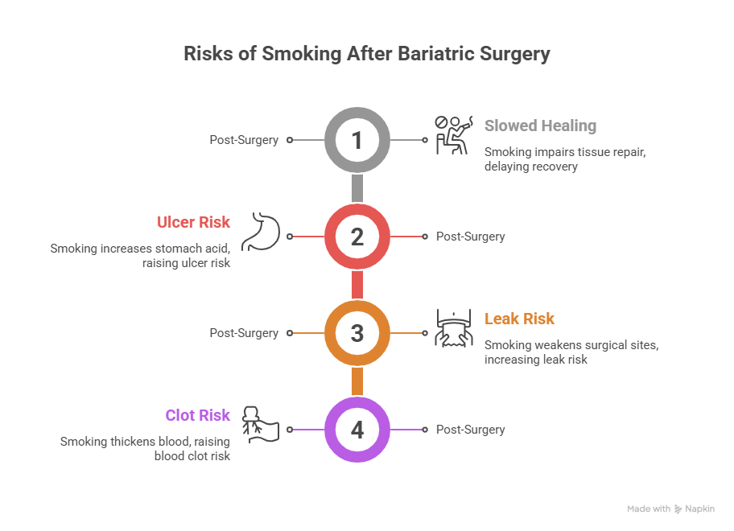
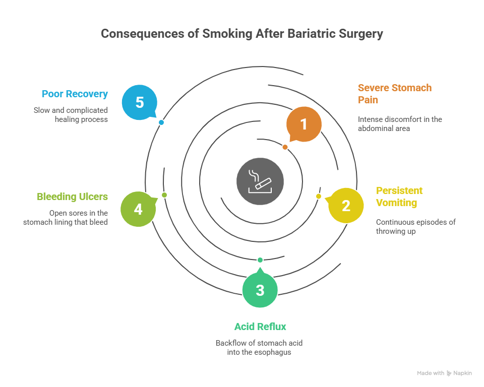

If you are planning to undergo weight loss surgery or have already had it, one common and very important question is, “Can you smoke after bariatric surgery?” The simple and honest answer is no—smoking after bariatric surgery is strongly discouraged. Smoking can seriously affect healing, increase complications, and even put your life at risk.
In this detailed guide, we will explain why smoking is dangerous after bariatric surgery, how long you should avoid it, what risks it causes, and what you can do to quit safely. This information is vital for patients considering surgery under the care of an experienced Bariatric Surgeon in Delhi, like Dr. Atul Peters.
Can You Smoke After Bariatric Surgery?
In this detailed guide, we will explain why smoking is dangerous after bariatric surgery, how long you should avoid it, causes, and what you can do to quit safely.
Book Your Appointment TodayUnderstanding Bariatric Surgery
Bariatric surgery is a medical procedure that helps people lose weight by changing how the stomach and digestive system work. Common types include:
These surgeries reduce stomach size and affect digestion and nutrient absorption. Because the body goes through major internal changes, proper healing is critical—and smoking interferes with that healing.
Can You Smoke After Bariatric Surgery?
Many patients ask again and again: Can you smoke after bariatric surgery? The medical answer is absolutely not, especially in the first few months—and ideally, never again.
Smoking after bariatric surgery can lead to:
- Poor wound healing
- Stomach ulcers
- Internal leaks
- Increased risk of Blood clots
Doctors strongly advise quitting smoking at least 4–6 weeks before surgery and never restarting after surgery.
Why Smoking is Dangerous After Bariatric Surgery?

1. Smoking Slows Down Healing
After bariatric surgery, your body needs good blood flow and oxygen to heal internal stitches and wounds. Smoking reduces oxygen supply in the blood, which means:
- Cuts and internal sutures heal slowly
- Risk of infection increases
- Pain lasts longer
This is one of the biggest reasons why smoking after bariatric surgery is unsafe.
2. Higher Risk of Stomach Ulcers
Smoking irritates the stomach lining and increases acid production. After surgery, your stomach is already sensitive. Smoking can cause:
- Marginal ulcers (very painful)
- Internal bleeding
- Vomiting blood or black stools
Ulcers are one of the most common complications linked to smoking after bariatric surgery.
3. Increased Risk of Leaks
One of the most serious complications of bariatric surgery is a leak from the stomach or intestine where it was cut and joined. Smoking increases this risk because:
- Blood flow is reduced
- Tissue becomes weak
- Healing is delayed
A leak is a medical emergency and may require another surgery.
4. Higher Chances of Blood Clots
Smoking thickens the blood and damages blood vessels. After surgery, patients are already at some risk of clots due to reduced movement. Smoking increases the risk of:
- Deep vein thrombosis (DVT)
- Pulmonary embolism (clot in lungs)
These conditions can be life-threatening.
How Long After Bariatric Surgery Can You Smoke?
If you are still asking can you smoke after bariatric surgery, it’s important to know that there is no “safe” time to restart smoking.
However, general medical guidelines suggest:
- Stop smoking at least 4–6 weeks before surgery
- Never smoke again
Many surgeons, including leading experts like Dr. Atul Peters, recommend lifelong avoidance of smoking for the best results and safety.
What Happens If You Smoke After Bariatric Surgery?

If a patient smokes after surgery, they may experience:
- Severe stomach pain
- Persistent vomiting
- Acid reflux
- Bleeding ulcers
- Poor recovery
In serious cases, smoking after bariatric surgery can lead to repeat surgery or long-term health problems.
Benefits of Quitting Smoking After Bariatric Surgery
Quitting smoking may be difficult, but the benefits are huge:
- Faster healing
- Lower risk of complications
- Better Lung Health
- Healthier Heart
- Longer life expectancy
Many patients find that bariatric surgery becomes a turning point for a healthier lifestyle.
Tips to Quit Smoking Safely Before and After Surgery
1. Set a Quit Date
Choose a date at least one month before surgery.
2. Talk to Your Doctor
Your surgeon or physician can suggest safe nicotine-free options.
3. Use Counselling or Support Groups
Emotional support increases success rates.
4. Avoid Triggers
Stay away from people or situations that encourage smoking.
5. Focus on Your Goal
Remember why you chose surgery—to improve your health and life.
Can You Smoke After Bariatric Surgery?
In this detailed guide, we will explain why smoking is dangerous after bariatric surgery, how long you should avoid it, causes, and what you can do to quit safely.
Book Your Appointment TodayConclusion
So, can you smoke after bariatric surgery? The clear medical answer is no. Smoking after bariatric surgery greatly increases the risk of serious complications and reduces the benefits of the procedure. Quitting smoking before and after surgery is one of the most important steps you can take for a safe recovery and a healthier future.
If you are considering surgery under a trusted Bariatric Surgeon in Delhi, like Dr. Atul Peters, following smoking cessation advice is essential for the best possible results. Bariatric surgery is not just about weight loss—it’s about choosing a healthier life.
Frequently Asked Questions
Can you smoke after Bariatric Surgery if you feel fine?
How long should I stop smoking before Bariatric surgery?
Is smoking after Bariatric surgery life-threatening?
Can I use nicotine gum or patches after surgery?
Does smoking affect weight loss after Bariatric Surgery?
Is vaping safer than smoking after Bariatric Surgery?
What are the signs of ulcers caused by smoking after surgery?
Will my surgeon cancel surgery if I smoke?
Recommended Further Reading
Have Personal Health Questions?
Consult with Dr. Atul Peters and our expert multidisciplinary team at Max Smart Super Speciality Hospital, Saket, New Delhi.
Book Your Consultation